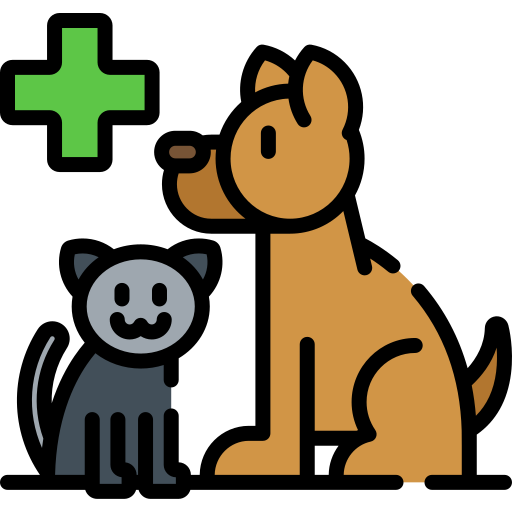

<div class="modal fade" id="aboutDialog" tabindex="-1" role="dialog" aria-labelledby="exampleModalCenterTitle" aria-hidden="true">
  <div class="modal-dialog modal-dialog-centered" role="document">
    <div class="modal-content">
      <div class="modal-header">
        <h5 class="modal-title" id="exampleModalCenterTitle">About</h5>
        <button type="button" class="close" data-dismiss="modal" aria-label="Close">
          <span aria-hidden="true">&times;</span>
        </button>
      </div>
      <div class="modal-body">
        <center></center>
        <center><h1>Internet Cat <span class="badge">r1</span></h1></center>
        <p></p>
<p>We believe in HTML5. I promise Internet Cat will never replace NodeJS+Chromium for a Chromium-only like Brave did. And we could also replace Chromium to Gecko, but I'm commited to keep enabling you to contribute IC with just your HTML/CSS/JS knowledge! ❤</p>
<hr/>
<h4>Adopt a pet</h4><p>Your overall health will improve a lot! A dog will keep you lovely and energized, and your cat's purr is relaxing and will make you mindful (or mindfurr).</p><br/><a href="https://ipfs.io/ipfs/QmW7oUoWwtZPSgG9zFfdxEEquNNt2wB2Y5rTnJ86jTVhA7/" target="_blank"><button><br/><span style="font-size:32px">Adopt a pet now!</span></button></a>
<hr/>
<div>Cute icons made by <a href="https://www.flaticon.com/authors/kawaii/lineal-color" title="Flat Icons" target="_blank">Lineal Color</a> from <a href="https://www.flaticon.com/" title="Flaticon" target="_blank">www.flaticon.com</a>.</div> Glyph icons by <a href="https://material.io/resources/icons/?icon=menu&style=baseline" target="blank">Material Icons</a>.
      </div>
      <div class="modal-footer">
        <button type="button" data-dismiss="modal" class="btn btn-primary btn-lg btn-block">Ok</button>
      </div>
    </div>
  </div>
</div>